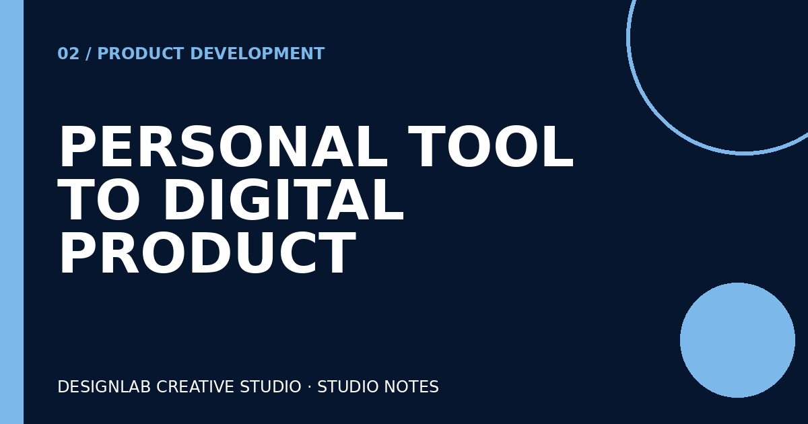

Building an Internal Creative Request System
How I connected a request form, tracker, dashboard, and status workflow.
Read article ↗Studio Notes
Short notes on design, workflows, and useful digital tools.
How I connected a request form, tracker, dashboard, and status workflow.
Read article ↗
How a personal planning tool became a working digital product.
Read article ↗
Lessons from building a consistent 60-day content system.
Read article ↗